# 라운드 9 — 2026-10-23 03:08 평균 점수(C, 1~5, Claude 채점): **3.13** · 자동 점수 3.21 · 그림 면적 평균 42% · 비용 $1.335 · 얼굴 잘림 0 | 유형 | 평균 | A 나음 | C 나음 | 같음 | |---|---|---|---|---| | 사진 | 3.15 | 0 | 5 | 0 | | 누끼 | 3.20 | 1 | 4 | 0 | | 오브젝트·일러스트 | 3.02 | 1 | 4 | 0 | AI 상자 결과: free 28 · shrink 49 · grow 17 · rule 20 · ok 6 ## 문제 집계 - bg:flat 41 - crop:subject_cut 39 - kvWeight:too_small 36 - crop:awkward 18 - text:low_contrast 16 - kvWeight:too_big 7 - crop:face_cut 5 - bg:busy 3 - text:overlap 3 - bg:seam 1 ## 케이스별 큰 문제 - **t1014-hanssem**(사진) · C 나음: 손을 든 왼쪽 여성(장면의 핵심 동작)이 대부분의 규격에서 잘린다. AI가 오른쪽 인물과 TV를 주인공으로 판단해 크롭 중심을 오른쪽으로 잡은 것으로 보인다. / 세로형(1080×1080·300×600·300×1050)에서 상단 단색 면이 넓고 글자가 작아 비어 보인다. 규칙이 그림을 하단 고정 비율로만 배치하기 때문으로 추정된다. / 300×1050의 본문 텍스트가 판독 불가 크기다. 글자 수를 줄이지 않고 그대로 축소 적용한 것이 원인이다. - **hr-doctor**(사진) · C 나음: 실사 사진은 자연스럽게 살렸지만 전체에 라벤더 틴트를 씌워 사진이 뿌옇고 브랜드 블루의 힘이 사라졌다. 원인은 가장자리 그라데이션 색을 블루와 화이트 중간값으로 섞어 전면에 깐 것으로 보인다. / 970×250, 580×400, 300×1050에서 키비주얼이 작게 축소되고 나머지가 단색으로 채워져 지면이 비어 보인다. 원인은 머리 보존 규칙이 얼굴 없는 손 컷에도 적용되어 피사체를 키우지 못한 것으로 추정된다. / 정사각형과 세로형에서 손끝이 하단 가장자리에 걸려 잘리고, 300×1050은 텍스트가 판독 불가 수준이다. 원인은 피사체를 하단에 앵커링하고 텍스트 크기를 규격 폭에 비례해 단순 축소한 것이다. - **midas-team-photo**(사진) · C 나음: 정사각·세로형(1080×1080, 300×1050)에서 사진이 하단 고정 높이 조각으로만 들어가 지면 중앙이 비고 인물이 잘림 — 비율별 사진 영역 확장 규칙이 없어 하단 배치 폴백을 그대로 쓴 것으로 추정 / 가로 와이드형(970×250, 580×400)에서 주목점을 맨 위 수염 남성에 맞추고 확대해 아래 두 인물 얼굴이 프레임 밖으로 잘림 — 피사체 그룹 전체 박스가 아니라 단일 얼굴 기준으로 크롭한 탓 / 작은 규격(300×1050, 320×100, 1080×1080)에서 카피 크기가 최소 가독 크기 아래로 축소됨 — 규격 짧은 변에 비례만 하고 최소 폰트 하한이 없음. (A 대비 C는 1250×560의 떠 있는 사각 사진 경계를 해결했고, 남색 배경이 사진 톤과 더 잘 어울려 전반적으로 나음) - **t1014-asan-photo**(사진) · C 나음: 정사각·세로형(1080×1080, 300×600, 300×1050)에서 사진이 하단 띠로 축소돼 지면 대부분이 단색으로 비어 보임. 가로형 원본을 폭 기준으로 맞춰 넣다 보니 높이가 부족해진 것으로 추정된다. / 1200×600은 크롭 앵커가 우측 야경에 고정돼 핵심 피사체인 병원 건물(원본 좌측)이 빠짐. 주인공 없음 판정으로 건물을 피사체로 인식하지 못한 것으로 보인다. / 남색 지면과 사진 속 밝은 보라 하늘의 명도 차이로 사진 영역 경계가 얼룩처럼 드러남. 페이드 폭이 짧고 지면색을 사진 하늘색에서 추출하지 않은 탓으로 보인다. - **midas-cablebridge**(사진) · C 나음: 전 규격에 깔린 회청색 오버레이가 원본의 맑은 하늘색과 케이블 열화상 색을 탁하게 만듭니다. 텍스트 대비를 확보하려고 사진 전체에 균일하게 오버레이를 건 탓으로 보이며, 텍스트 쪽에만 그라데이션을 거는 방식이 필요합니다. / 580×400과 1200×600에서 텍스트가 케이블·주탑과 겹칩니다. 주인공이 41%를 차지하는 여러 덩어리 구도인데, 크롭할 때 텍스트 안전영역을 피사체 회피 조건으로 쓰지 않은 것으로 보입니다. / 1250×560과 300×1050에서 주탑이 잘리거나 조각만 남습니다. 가로로 긴 다리 구도를 극단 비율에 맞추면서 주탑 같은 핵심 요소를 우선 보존하지 못했습니다. - **t1014-dongsuh**(누끼) · C 나음: 1080×1080은 텍스트를 중앙 상단에 두는 고정 레이아웃 탓에 인물이 하단에 작게 밀려 지면이 비어 보인다. / 300×1050은 가로형 문구량을 그대로 넣어서 텍스트가 판독 불가 수준으로 작아졌다. / 970×250은 인물을 중앙에 배치하는 판단 때문에 텍스트·인물·로고 사이에 빈 면이 생겨 구성이 흩어진다. 노란 배경에 빨간 로고는 크기도 작아 전반적으로 약하다. - **t1014-jeil**(누끼) · C 나음: 키비주얼 확대 후 위치 보정이 안 되어 하단이나 상하가 잘리는 규격이 많음(확대 비율만 높이고 안전영역 검사가 없는 것으로 추정) / 세로 규격(300×600, 300×1050)에서 JEIL 글자 조각만 보이는 어색한 크롭(가로형 KV를 높이 기준으로 채운 탓) / 1200×600은 반대로 키비주얼이 작아 지면이 비어 보임(규격별 비중 판단이 들쭉날쭉함) - **t1014-bionote-dog**(누끼) · C 나음: 580×400·1080×1080에서 개가 하단에 머리만 작게 놓여 지면이 비어 보임 — 세로형 캐릭터의 '머리 보존' 규칙이 크기를 보수적으로 잡은 것으로 추정 / 300×1050은 글자가 판독 불가 수준으로 작고 중단이 텅 빔 — 극세로 비율에서 텍스트 스케일과 KV 배치를 따로 조정하지 않은 탓으로 추정 / C가 배경을 파랑으로 바꿔 금빛 개와 대비는 좋아졌지만 A의 갈색 계열과 달라 브랜드 컬러와 일치하는지 확인 필요 - **abl-group**(누끼) · C 나음: 세로·정사각 규격(1080×1080, 300×600, 300×1050)에서 가로로 긴 캐릭터 떼를 폭 기준으로 맞추다 보니 캐릭터가 하단 띠처럼 작아지고 중간이 비어 보임. 덩어리를 나눠 재배치하지 않는 것이 원인으로 추정됨 / 320×100 등 작은 가로 규격에서 크롭 위치를 오른쪽 기준으로 잡아 주인공인 노란 벌이 빠지고 어색한 조각만 남음 / 580×400에서 캐릭터 상단과 텍스트 영역 사이에 충돌 회피 여백이 없어 날짜 줄이 벌 머리와 겹치고, 여러 규격에서 하단 다리가 잘림 - **midas-folder-blue**(누끼) · A 나음: 단일 사물 누끼인데도 크롭을 피사체 우선이 아니라 지면 채우기 기준으로 잡아 970×250·580×400·1080×1080·세로형에서 폴더 아이콘이 잘림(누끼 사물은 전체 노출이 원칙인데 AI 판단이 확대 배율을 과하게 적용한 것으로 추정) / 970×250에서 키비주얼 배율이 높이를 넘어 too_big. 지면 절반을 덮고 상하가 잘림(가로형 와이드에서 비중 상한 규칙이 없는 것으로 추정) / 300×1050은 텍스트 스케일이 폭 기준으로만 줄어 판독이 안 되고 세로 중간이 비어 보임(세로 초장형 전용 레이아웃 규칙 부재로 추정) - **t1014-gs2025**(오브젝트·일러스트) · A 나음: C의 크롭 기준이 메가폰 오브젝트에 쏠려 있다. 인물 그룹(노트북 남자·여자·휴대폰)이 대부분 규격에서 잘리거나 빠졌는데, 원인은 AI가 주인공을 메가폰으로 판단하고 확대 배치했기 때문으로 보인다. / 하단에 놓인 그림을 크게 확대한 채 아래쪽에 고정해 일부 규격(580×400, 320×100, 1250×560)에서 그림 조각만 걸린다. 580×400은 거의 빈 지면이다. / 970×250에서 그림 확대 배율이 과해 얼굴과 메가폰이 잘린다. 띠 배너는 그림을 축소해 그룹 전체를 넣는 쪽이 낫다. - **t1014-lt-v2**(오브젝트·일러스트) · C 나음: 970×250에서 키비주얼이 과확대돼 칩 상하가 잘리고 조각만 보임 — 초광폭 규격에서 높이 채우기(cover) 스케일을 적용한 것으로 추정 / 1250×560·580×400 등에서 칩이 프레임 가장자리에 고정돼 절반가량 잘림 — 키비주얼을 우측/하단 끝에 앵커링하고 주인공 안전영역을 고려하지 않은 배치 / 300×1050 세로 극단 규격에서 작은 글자가 회로 패턴 위에 얹혀 가독성 저하 — 텍스트 뒤 배경 정리(딤 처리)나 최소 글자 크기 규칙이 없음 - **midas-faces-3d**(오브젝트·일러스트) · C 나음: 가로형 규격(1200×600·1250×560·970×250)은 키비주얼을 키운 대신 하단 기준으로 붙여서 손·폰·카드가 잘림. 확대 시 안전 여백 기준이 없는 것으로 추정됨. / 세로·정사각 규격(300×600·300×1050·1080×1080·580×400)은 A와 같은 규칙 배치를 그대로 써서 키비주얼이 작고 하단에 몰려 중앙이 빔. AI 판단이 비가로형 비율에는 적용되지 않은 것으로 보임. / 소형·세로 규격의 타이틀 크기가 규격 폭에 비례해 줄어 판독이 어려움. 최소 글자 크기 규칙이 없는 탓으로 추정됨. - **pin-15**(오브젝트·일러스트) · C 나음: 970×250과 1080×1080은 A와 거의 같은 배치로, 신호등 윗머리 조각만 작게 남는다. 세로형 KV를 가로·정사각 지면에 넣을 때 하단 정렬과 축소 규칙만 적용되고 AI 크롭 판단이 반영되지 않은 것으로 보인다. / 주인공인 녹색 보행 신호기가 일부 규격(580×400, 320×100)에서 잘리거나 빠진다. 크롭 기준점이 신호기 박스가 아니라 기둥과 신호등 헤드에 잡힌 것으로 추정된다. / 300×1050은 텍스트가 너무 작아 판독이 불가능하다. 텍스트 스케일이 캔버스 폭(300px) 기준으로만 계산되어 세로 여백을 활용하지 못한 것으로 보인다. - **t1014-asan-illust**(오브젝트·일러스트) · C 나음: 970×250·1250×560은 AI 판단으로 인물 크롭과 크기가 개선됐지만, 1200×600·580×400·1080×1080·세로형은 A와 거의 같다. 규칙 기반 '우측 하단 고정 배치'를 그대로 따른 것으로 보인다. / 정사각·세로형에서 키비주얼이 너무 작아 지면 대부분이 단색 파랑으로 비어 보인다. 원본이 가로형이라 폭에 맞춰 축소한 결과로 추정한다. 인물 일부만 크롭해 확대하는 판단이 필요하다. / 300×1050처럼 작은 규격은 텍스트 크기에 하한이 없어 글자가 읽히지 않는다.
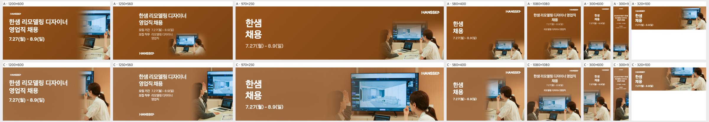
| 규격 | 점수 | 비중 | 크롭 | 배경 | 글자 | 메모 | AI 상자 | 그림 면적·주인공·채움·겹침 |
|---|---|---|---|---|---|---|---|---|
| 1200×600 | 3 | ok | subject_cut | ok | ok | 오른쪽 여성 옆얼굴과 TV 모서리만 보이고 손을 든 왼쪽 여성은 빠졌다. 그림 폭을 오른쪽 40%까지 넓히고 TV 중심으로 다시 크롭해 두 인물과 화면이 함께 들어오게 한다. | free | 30% · 29% · 42% · 0% |
| 1250×560 | 4 | ok | subject_cut | ok | ok | TV 화면과 오른쪽 여성은 잘 살았지만 왼쪽 여성은 손만 남았다. 크롭을 왼쪽으로 10%가량 옮겨 손 든 인물의 얼굴까지 넣고, 하단 로고와 그림 사이 여백을 맞춘다. | shrink | 36% · 33% · 45% · 4.5% |
| 970×250 | 4 | ok | ok | ok | ok | 그림 왼쪽 경계의 그라데이션 폭을 넓혀 이음새가 덜 보이게 한다. 오른쪽 여성 머리가 상단에 붙지 않도록 크롭을 5% 아래로 내린다. | shrink | 58% · 52% · 59% · 0% |
| 580×400 | 3 | ok | subject_cut | ok | ok | TV 일부와 오른쪽 인물만 보여 장면이 무엇인지 읽히지 않는다. 그림 배율을 약간 줄여 노트북과 화면 속 인테리어 렌더가 함께 보이게 한다. | free | 45% · 30% · 36% · 0% |
| 1080×1080 | 3 | ok | ok | flat | ok | 상단 갈색 면이 넓게 비고 본문 글자가 작아 위계가 약하다. 헤드라인을 1.5배 키우고, 그림을 위로 15% 올려 빈 면을 줄인다. | shrink | 53% · 38% · 51% · 0% |
| 300×600 | 3 | ok | subject_cut | flat | ok | 하단 그림에 TV와 한 인물만 들어간다. 날짜를 키우고 그림 영역을 위로 늘려 두 인물이 마주 보는 구도를 살린다. | free | 63% · 46% · 52% · 0% |
| 300×1050 | 2 | too_small | ok | flat | low_contrast | 상단 문구가 너무 작아 읽히지 않는다. 헤드라인을 최소 28px 이상으로 키우고 부가 정보는 덜어낸다. 그림은 하단 절반을 채우도록 키운다. | grow | 60% · 32% · 47% · 0% |
| 320×100 | 3 | ok | ok | ok | ok | 오른쪽 여성 얼굴과 TV가 들어와 A보다 낫다. 다만 날짜가 작으니 굵기를 올리고, 로고와 헤드라인 간격을 줄여 세로 중앙을 맞춘다. | free | 62% · 63% · 72% · 0% |
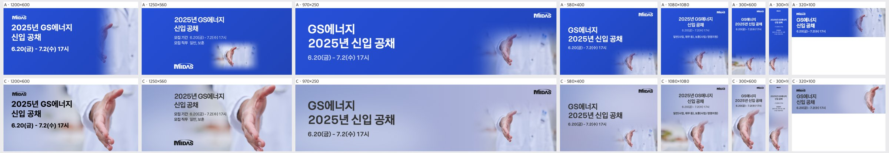
| 규격 | 점수 | 비중 | 크롭 | 배경 | 글자 | 메모 | AI 상자 | 그림 면적·주인공·채움·겹침 |
|---|---|---|---|---|---|---|---|---|
| 1200×600 | 4 | ok | ok | ok | ok | 왼쪽 흰 가운 소매 위에 놓인 짙은 회색 타이틀의 대비가 조금 약하다. 텍스트 영역 뒤에만 옅은 화이트 그라데이션을 20~30% 더 깔고 타이틀을 순흑 또는 브랜드 네이비로 바꾼다. | grow | 79% · 33% · 50% · 0% |
| 1250×560 | 4 | ok | ok | ok | ok | '모집 기간' 줄 끝이 손가락 끝과 거의 붙어 있다. 텍스트 블록을 왼쪽으로 40px쯤 옮기거나 손 이미지를 오른쪽으로 밀어 여백을 확보한다. | grow | 79% · 35% · 47% · 0% |
| 970×250 | 3 | too_small | ok | flat | ok | 손이 오른쪽 끝에 작게 떠 있고 가운데는 라벤더 단색만 넓게 남아 비어 보인다. 이미지를 높이에 맞춰 1.5배 키워 손이 우측 1/3을 채우게 하고, 가운 질감이 중앙까지 이어지도록 그라데이션 시작점을 왼쪽으로 옮긴다. | rule | 7% · 21% · 37% · 0% |
| 580×400 | 3 | too_small | subject_cut | flat | ok | 손이 우하단에 작게 들어가 손끝이 아래 가장자리에 걸리고 상단은 단색으로 비어 있다. 이미지를 키우고 위로 올려 손 전체가 우측 중단에 오도록 재크롭한다. | rule | 6% · 16% · 32% · 0% |
| 1080×1080 | 3 | ok | subject_cut | busy | ok | 손이 하단 가장자리에서 잘리고 좌하단 주황 블러 소품이 시선을 분산시킨다. 손을 프레임 안쪽으로 15% 끌어올리고 좌하단은 블러와 톤다운으로 정리하며, 날짜와 직무 텍스트는 키운다. | shrink | 51% · 18% · 38% · 0% |
| 300×600 | 3 | ok | subject_cut | ok | ok | 손끝이 하단에 붙어 잘려 보인다. 손을 위로 10% 올려 하단 여백을 확보하고, 날짜 텍스트를 1~2pt 키운다. | grow | 72% · 56% · 69% · 0% |
| 300×1050 | 2 | too_small | ok | flat | low_contrast | 타이틀과 날짜가 너무 작고 옅어 판독이 불가능하다. 세로형 전용 레이아웃으로 텍스트를 2배 이상 키워 줄바꿈하고, 손을 중하단에 크게 배치해 중간의 빈 단색 구간을 없앤다. | shrink | 42% · 36% · 51% · 0% |
| 320×100 | 4 | ok | ok | ok | ok | 날짜 글자가 매우 작다. 소형 배너에서는 날짜를 빼거나 타이틀 한 줄과 날짜 한 줄로 줄여 글자 크기를 확보한다. | shrink | 25% · 22% · 38% · 0% |
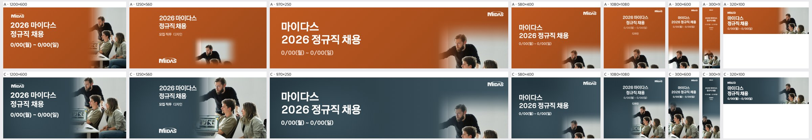
| 규격 | 점수 | 비중 | 크롭 | 배경 | 글자 | 메모 | AI 상자 | 그림 면적·주인공·채움·겹침 |
|---|---|---|---|---|---|---|---|---|
| 1200×600 | 4 | ok | ok | ok | ok | 수염 남성 머리 윗부분이 상단에 붙어 답답하니 사진을 5~8% 내려 머리 위 여백을 확보할 것. | shrink | 47% · 19% · 34% · 0% |
| 1250×560 | 4 | ok | ok | ok | ok | 수염 남성의 뻗은 팔이 그라데이션 속으로 흐려지며 '2026 마이다스' 옆까지 다가오니 사진을 오른쪽으로 30~40px 옮겨 카피와 간격을 둘 것. | shrink | 55% · 25% · 34% · 0% |
| 970×250 | 3 | too_small | face_cut | flat | ok | 사진이 오른쪽 끝 좁은 조각이라 왼쪽 2/3가 빈 남색이고 아래 두 사람 얼굴이 잘리니, 사진 폭을 40% 이상으로 넓히고 세 사람 얼굴이 모두 들어오게 확대 비율을 낮춰 다시 크롭할 것. | rule | 6% · 26% · 41% · 0% |
| 580×400 | 3 | too_small | face_cut | flat | ok | 사진이 우하단 구석에만 있고 젊은 남성 얼굴이 하단에서 잘리니, 사진 영역을 오른쪽 절반 전체 높이로 키우고 세 인물이 보이게 축소할 것. | rule | 4% · 21% · 36% · 0% |
| 1080×1080 | 2 | too_small | subject_cut | flat | low_contrast | 카피가 작고 사진은 하단 1/3에 머리만 걸쳐 가운데가 비어 보이니, 사진을 하단 55~60%로 키워 세 인물 상반신을 넣고 타이틀을 1.5배 키울 것. | shrink | 38% · 13% · 24% · 0% |
| 300×600 | 4 | ok | ok | ok | ok | 날짜 줄이 너무 작으니 한 단계 키우고, 사진 상단 그라데이션을 조금 짧게 줄여 수염 남성 머리를 더 또렷하게 살릴 것. | shrink | 62% · 37% · 50% · 0% |
| 300×1050 | 2 | too_small | ok | flat | low_contrast | 타이틀이 읽을 수 없을 만큼 작고 가운데 절반이 빈 남색이니, 타이틀을 2배 이상 키워 세로 중앙으로 내리고 사진을 하단 45%까지 확장할 것. | shrink | 42% · 14% · 22% · 0% |
| 320×100 | 3 | ok | ok | ok | low_contrast | 날짜와 로고가 판독 한계 크기이니 날짜를 빼거나 키우고, 사진은 수염 남성과 젊은 남성 두 얼굴 위주로 확대 크롭할 것. | rule | 19% · 40% · 56% · 0% |
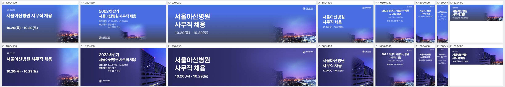
| 규격 | 점수 | 비중 | 크롭 | 배경 | 글자 | 메모 | AI 상자 | 그림 면적·주인공·채움·겹침 |
|---|---|---|---|---|---|---|---|---|
| 1200×600 | 3 | too_small | awkward | seam | ok | 우하단에 도시 야경 조각만 작게 남고 병원 건물이 빠졌다. 사진을 오른쪽 절반 높이 전체로 키우고, 왼쪽 병원 건물이 보이도록 크롭 기준을 좌측으로 옮긴다. 밝은 보라 하늘과 남색 지면의 경계는 그라디언트를 넓혀 지운다. | rule | 15% · 31% · 45% · 0% |
| 1250×560 | 4 | ok | ok | ok | ok | 병원 건물과 야경이 잘 살아 있다. 다만 건물 좌측 페이드가 짧아 모집직무 줄 끝과 가까우니, 사진을 오른쪽으로 20~30px 밀어 텍스트와 여백을 확보한다. | shrink | 32% · 31% · 43% · 0% |
| 970×250 | 3 | too_small | ok | flat | ok | 텍스트와 우측 사진 사이 중앙 400px가량이 남색 단색으로 비어 보인다. 사진 폭을 왼쪽으로 늘려 하늘·야경이 가운데까지 이어지게 하거나, 텍스트 블록을 키워 공백을 줄인다. | rule | 5% · 26% · 40% · 0% |
| 580×400 | 3 | too_small | ok | ok | ok | 병원 건물이 우하단 구석에 작게 몰려 있다. 사진 높이를 지면의 2/3 정도로 키워 건물이 우측 하단 1/3을 채우게 하고, 텍스트는 좌상단에 유지한다. | free | 36% · 36% · 50% · 0% |
| 1080×1080 | 2 | too_small | awkward | flat | ok | 하단 띠에 야경 조각만 보이고 상단 2/3는 남색 단색이라 비어 보인다. 사진을 하단 절반 이상으로 키워 병원 건물과 야경이 함께 보이게 크롭하고, 직무 텍스트 크기도 키운다. | rule | 7% · 32% · 49% · 0% |
| 300×600 | 3 | too_small | awkward | flat | ok | 사진이 하단 일부에만 걸쳐 있어 중앙이 비어 있다. 병원 건물을 세로로 크롭해 하단 40% 이상을 채우고, 하늘과 지면을 부드럽게 연결한다. | shrink | 55% · 54% · 67% · 0% |
| 300×1050 | 2 | too_small | awkward | flat | low_contrast | 타이틀·날짜·직무 글자가 지나치게 작아 판독이 어렵고, 세로 대부분이 단색이다. 타이틀을 최소 2배로 키우고, 병원 건물 세로 크롭을 하단 절반에 배치한다. | shrink | 40% · 40% · 54% · 0% |
| 320×100 | 4 | ok | ok | ok | ok | 병원 건물이 우측에 보여 정체성은 살아 있다. 날짜 글자가 작으니 한 단계 키우고, 로고는 더 작게 줄이거나 빼서 텍스트 공간을 확보한다. | shrink | 55% · 31% · 50% · 0% |
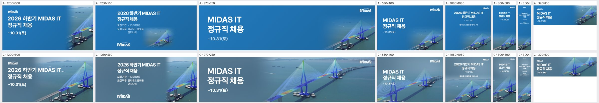
| 규격 | 점수 | 비중 | 크롭 | 배경 | 글자 | 메모 | AI 상자 | 그림 면적·주인공·채움·겹침 |
|---|---|---|---|---|---|---|---|---|
| 1200×600 | 4 | ok | ok | ok | overlap | 제목 'MIDAS IT' 끝이 주탑 케이블 끝에 닿습니다. 사진을 오른쪽으로 40~60px 옮기거나 제목 폭을 줄여 케이블과 간격을 두세요. | shrink | 70% · 27% · 38% · 8.7% |
| 1250×560 | 3 | ok | subject_cut | flat | ok | 주탑이 오른쪽 끝에서 잘리고 왼쪽은 회청색 빈 바다만 남습니다. 사진을 왼쪽으로 당겨 두 주탑이 모두 프레임 안에 들어오게 하세요. | shrink | 32% · 22% · 34% · 0% |
| 970×250 | 4 | ok | ok | ok | ok | 구성은 좋습니다. 다만 어두운 오버레이가 사진 채도를 죽이므로 오른쪽 사진 영역의 오버레이 농도를 줄여 원본의 파란색을 살리세요. | shrink | 70% · 48% · 59% · 0% |
| 580×400 | 2 | too_big | ok | busy | overlap | 제목과 날짜가 케이블·상판 위에 그대로 얹혀 있습니다. 사진을 축소해 오른쪽 아래로 보내고, 텍스트 뒤 왼쪽 위 하늘·바다 영역을 확보하세요. | grow | 80% · 59% · 59% · 100% |
| 1080×1080 | 4 | ok | ok | ok | ok | 주탑 꼭대기가 직무 문구 바로 아래까지 올라옵니다. 사진을 10% 정도 아래로 내려 텍스트 블록과 간격을 확보하세요. | shrink | 65% · 30% · 45% · 0% |
| 300×600 | 3 | ok | awkward | ok | ok | 한쪽 주탑의 일부만 보여 다리라는 것이 읽히지 않습니다. 주탑 하나가 하단 중앙에 온전히 들어오도록 크롭을 다시 잡으세요. | shrink | 62% · 51% · 60% · 0% |
| 300×1050 | 2 | ok | awkward | ok | low_contrast | 텍스트가 너무 작아 읽히지 않고 사진은 케이블 조각만 보입니다. 제목을 2배 이상 키우고, 주탑을 세로 중심축에 맞춰 크롭하세요. | grow | 54% · 48% · 60% · 0% |
| 320×100 | 4 | ok | ok | ok | ok | 주탑이 잘 들어옵니다. 날짜 글씨가 작으므로 한 단계 키우세요. | free | 62% · 26% · 41% · 0% |
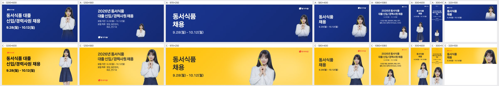
| 규격 | 점수 | 비중 | 크롭 | 배경 | 글자 | 메모 | AI 상자 | 그림 면적·주인공·채움·겹침 |
|---|---|---|---|---|---|---|---|---|
| 1200×600 | 4 | ok | ok | ok | ok | 인물이 오른쪽 끝에 붙어 가운데가 비어 보이므로, 인물을 15%쯤 키워 텍스트 블록 쪽으로 당기고 무릎 위에서 자르면 화면이 더 꽉 찬다. | ok | 21% · 8% · 22% · 0% |
| 1250×560 | 4 | ok | ok | ok | ok | 좌하단 빨간 로고가 노란 배경에서 작고 약하므로, 로고를 1.3배 키우고 상단 타이틀 라인 쪽으로 올려 정렬을 맞춘다. | free | 31% · 17% · 35% · 0% |
| 970×250 | 3 | ok | ok | flat | ok | 인물이 가운데에 떠서 텍스트와의 사이, 우측 로고 사이에 빈 노란 면이 크게 남으므로, 인물을 우측 1/3 지점으로 옮기고 로고는 인물 왼쪽 위나 텍스트 위로 붙인다. | free | 67% · 17% · 25% · 0% |
| 580×400 | 4 | ok | ok | ok | ok | 우상단 로고가 인물 머리와 가깝게 붙어 답답하므로, 로고를 텍스트 블록 위 좌상단으로 옮긴다. | free | 40% · 19% · 28% · 0% |
| 1080×1080 | 3 | too_small | ok | flat | ok | 인물이 하단에 작게 가슴 위만 나와 지면 절반이 빈 노란 면이므로, 텍스트를 좌측 정렬로 바꾸고 인물을 우측에 화면 높이 70% 이상으로 키워 배치한다. | free | 45% · 13% · 37% · 0% |
| 300×600 | 4 | ok | ok | ok | ok | 타이틀이 폭에 비해 작으므로, '동서식품 채용' 글자를 1.4배 키우고 인물을 그만큼 아래로 내린다. | free | 63% · 36% · 45% · 0% |
| 300×1050 | 3 | ok | ok | ok | low_contrast | 상단 텍스트가 너무 작아 읽히지 않으므로, 모집직무 상세는 빼고 타이틀·기간만 2배 크기로 키운 뒤 인물은 그 아래 남는 공간에 맞춘다. | grow | 61% · 44% · 62% · 0% |
| 320×100 | 4 | ok | ok | ok | ok | 인물 머리끝이 상단에 거의 붙어 있으므로, 인물을 5px쯤 내려 머리 위 여백을 확보하고 로고를 텍스트 왼쪽 위로 맞춘다. | free | 58% · 19% · 31% · 0% |
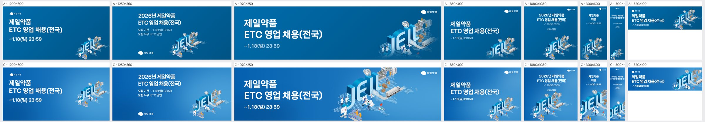
| 규격 | 점수 | 비중 | 크롭 | 배경 | 글자 | 메모 | AI 상자 | 그림 면적·주인공·채움·겹침 |
|---|---|---|---|---|---|---|---|---|
| 1200×600 | 3 | too_small | ok | ok | ok | 키비주얼이 우하단에 작게 몰려 있어 가운데가 비어 보이니, 1.3배 정도 키우고 중앙 쪽으로 당겨 텍스트 블록과 무게를 맞출 것. | shrink | 30% · 16% · 32% · 0% |
| 1250×560 | 3 | ok | subject_cut | ok | ok | 키비주얼 하단(실험실 인물부)이 바닥 끝에 잘리니, 10%쯤 위로 올리거나 약간 줄여 전체가 들어오게 할 것. | shrink | 32% · 18% · 33% · 0% |
| 970×250 | 3 | too_big | subject_cut | ok | ok | 키비주얼이 위아래로 잘리고 우상단 로고와 공장부가 붙어 답답하니, 높이에 맞게 85% 수준으로 줄여 상하 여백을 확보하고 로고와의 간격을 벌릴 것. | grow | 67% · 38% · 53% · 0% |
| 580×400 | 3 | ok | subject_cut | ok | ok | JEIL 글자 하단과 인물이 아래 끝에 잘리니, 키비주얼을 위로 올리고 살짝 줄여 바닥 여백을 둘 것. | shrink | 45% · 12% · 27% · 0% |
| 1080×1080 | 3 | ok | subject_cut | flat | ok | JEIL 하단이 프레임 밖으로 잘리고 상단 텍스트와 키비주얼 사이 중앙이 비니, 키비주얼을 중앙으로 올려 전체를 보이게 배치할 것. | shrink | 54% · 25% · 39% · 0% |
| 300×600 | 2 | too_big | awkward | ok | ok | JEIL 글자만 크게 잘려 들어와 무슨 그림인지 모호하니, 폭에 맞게 축소해 공장·트럭까지 포함한 전체 구도를 보여줄 것. | shrink | 58% · 35% · 42% · 0% |
| 300×1050 | 2 | too_big | awkward | flat | low_contrast | 키비주얼이 'JE' 조각만 하단에 잘려 보이고 텍스트도 너무 작으니, 그림을 폭에 맞춰 축소해 전체를 넣고 제목 글자 크기를 2배 이상 키울 것. | shrink | 36% · 27% · 38% · 0% |
| 320×100 | 4 | ok | ok | ok | ok | 납품 가능 수준이며, 텍스트와 키비주얼 사이 간격을 약간만 더 벌릴 것. | grow | 43% · 19% · 39% · 0% |
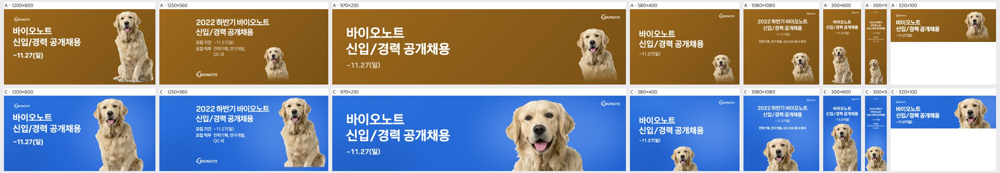
| 규격 | 점수 | 비중 | 크롭 | 배경 | 글자 | 메모 | AI 상자 | 그림 면적·주인공·채움·겹침 |
|---|---|---|---|---|---|---|---|---|
| 1200×600 | 4 | ok | ok | ok | ok | 개 머리 위 여백이 빠듯하니 개를 5%쯤 내려 정수리와 상단 사이에 숨 쉴 공간을 확보할 것. | ok | 39% · 6% · 21% · 0% |
| 1250×560 | 4 | ok | ok | ok | ok | 가슴선에서 잘린 하단이 다소 급하니 개를 살짝 키워 앞다리 시작까지 넣고, 본문 블록과 개 사이 간격을 일정하게 맞출 것. | free | 31% · 5% · 23% · 0% |
| 970×250 | 4 | ok | ok | ok | ok | 개 얼굴이 우측 로고와 가까우니 개를 왼쪽으로 30~40px 옮겨 로고 주변 여백을 확보할 것. | shrink | 39% · 13% · 27% · 0% |
| 580×400 | 2 | too_small | awkward | flat | ok | 개가 우하단 구석에 머리만 작게 박혀 있으니 높이의 80% 이상으로 키워 우측 절반을 채우고, 하단 크롭을 가슴선 아래로 내릴 것. | free | 34% · 4% · 20% · 0% |
| 1080×1080 | 3 | too_small | ok | flat | ok | 정사각 하단에 개 머리가 작게만 걸려 중단이 비어 보이니 개를 1.4배쯤 키워 텍스트 블록 바로 아래까지 올리고, 본문 글자도 한 단계 키울 것. | free | 45% · 10% · 33% · 0% |
| 300×600 | 4 | ok | ok | ok | ok | 부제·일자 글자가 작으니 한 단계 키우고, 개를 약간 키워 하단까지 꽉 채울 것. | shrink | 51% · 44% · 57% · 0% |
| 300×1050 | 2 | too_small | ok | flat | low_contrast | 상단 텍스트가 판독 불가 수준으로 작고 중단이 텅 비었으니 헤드라인을 최소 2배로 키우고, 개를 폭 100%로 확대해 하단 40%를 채울 것. | shrink | 34% · 12% · 30% · 0% |
| 320×100 | 4 | ok | ok | ok | ok | 헤드라인이 개 왼쪽 귀와 가까우니 개를 우측 끝으로 붙여 간격을 확보할 것. | free | 43% · 17% · 36% · 0% |
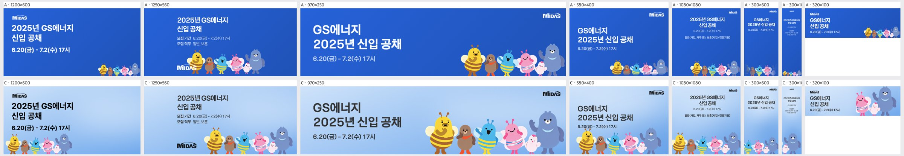
| 규격 | 점수 | 비중 | 크롭 | 배경 | 글자 | 메모 | AI 상자 | 그림 면적·주인공·채움·겹침 |
|---|---|---|---|---|---|---|---|---|
| 1200×600 | 3 | too_small | ok | flat | ok | 캐릭터 떼가 왼쪽 아래 글자 밑에 몰려 오른쪽 절반이 비어 있으니, 떼를 오른쪽 하단으로 옮기고 높이의 60% 정도로 키워 텍스트와 좌우로 나눠 배치할 것. | free | 30% · 15% · 32% · 0% |
| 1250×560 | 4 | ok | ok | ok | ok | 구성은 안정적이나 MIDAS 로고가 왼쪽 아래 캐릭터 옆에 붙어 묻히니, 로고를 오른쪽 상단으로 올려 다른 규격과 위치를 맞출 것. | shrink | 32% · 24% · 36% · 0% |
| 970×250 | 4 | ok | ok | ok | ok | 하단에서 다리가 잘리니 떼를 5~8% 줄이거나 위로 올려 노란 벌과 곰의 발끝까지 보이게 할 것. | free | 55% · 34% · 49% · 0% |
| 580×400 | 3 | ok | ok | ok | overlap | 날짜 줄 '6.20(금)'이 노란 벌의 더듬이·머리와 겹치니, 텍스트 블록을 위로 20px 올리거나 떼를 오른쪽 아래로 밀어 간격을 확보할 것. | grow | 43% · 19% · 34% · 0% |
| 1080×1080 | 3 | too_small | ok | flat | ok | 캐릭터가 하단 띠처럼 작게 깔려 가운데가 크게 비어 있으니, 떼를 1.5배 키워 하단 40%를 채우고 타이틀 글자 크기도 키울 것. | shrink | 36% · 17% · 38% · 0% |
| 300×600 | 3 | too_small | subject_cut | flat | ok | 폭에 맞춰 축소된 떼가 바닥에 작게 깔리고 양끝이 잘리니, 노란 벌과 곰 2~3마리만 골라 크게 배치하고 중간 빈 공간을 줄일 것. | ok | 28% · 21% · 34% · 0% |
| 300×1050 | 2 | too_small | subject_cut | flat | low_contrast | 글자가 너무 작아 읽히지 않고 캐릭터도 하단에 손톱만 하니, 타이틀을 2배 이상 키우고 캐릭터는 1~2마리를 세로로 크게 써서 중간 여백을 메울 것. | grow | 33% · 29% · 44% · 0% |
| 320×100 | 3 | ok | awkward | ok | ok | 대표 캐릭터인 노란 벌이 빠지고 분홍 벌·병아리·곰 조각만 보이니, 떼 전체를 축소해 넣거나 노란 벌을 중심으로 크롭할 것. | free | 53% · 25% · 41% · 0% |
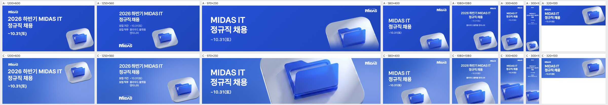
| 규격 | 점수 | 비중 | 크롭 | 배경 | 글자 | 메모 | AI 상자 | 그림 면적·주인공·채움·겹침 |
|---|---|---|---|---|---|---|---|---|
| 1200×600 | 3 | ok | subject_cut | flat | ok | 아이콘이 우상단으로 올라가 헤드라인 끝에 붙고 오른쪽 가장자리가 잘리며 우하단이 비므로, 아이콘을 우측 중앙~하단으로 내려 온전히 보이게 하고 헤드라인과 40px 이상 띄운다. | shrink | 22% · 3% · 15% · 0% |
| 1250×560 | 4 | ok | ok | ok | ok | 아이콘 우측 끝이 프레임에 살짝 걸리므로 20~30px 안쪽으로 당겨 타일 모서리가 다 보이게 한다. | free | 31% · 4% · 16% · 0% |
| 970×250 | 2 | too_big | subject_cut | ok | ok | 폴더를 높이보다 크게 키워 타일과 폴더 상단이 잘리고 지면 절반을 덮으므로, 배율을 낮춰 아이콘 전체가 높이 안에 들어오게 하고 로고와 간격을 확보한다. | free | 68% · 28% · 39% · 0% |
| 580×400 | 3 | ok | subject_cut | ok | ok | 아이콘이 하단에서 크게 잘려 폴더 윗부분만 보이므로, 위로 올려 폴더 전체가 보이게 하고 우하단 여백 안에 온전히 배치한다. | shrink | 29% · 5% · 17% · 0% |
| 1080×1080 | 3 | ok | subject_cut | ok | ok | 하단에서 아이콘이 절반 가까이 잘리므로, 아이콘을 중앙 하단에 통째로 올리고 크기를 조금 줄여 정사각형 안에 다 들어오게 한다. | free | 51% · 14% · 28% · 0% |
| 300×600 | 3 | ok | subject_cut | ok | ok | 아이콘 좌우와 하단이 잘려 사물이 조각으로 보이므로, 폭에 맞게 축소해 하단 중앙에 온전히 배치한다. | ok | 48% · 40% · 49% · 0% |
| 300×1050 | 2 | too_small | subject_cut | flat | low_contrast | 글자가 읽기 어려울 만큼 작고 중간이 비며 아이콘은 하단에서 잘리므로, 헤드라인을 2배 이상 키우고 아이콘을 폭에 맞춰 온전히 중하단에 둔다. | ok | 30% · 21% · 33% · 0% |
| 320×100 | 4 | ok | ok | ok | ok | 아이콘 위아래가 살짝 잘리므로 조금 축소해 타일 윤곽이 다 보이게 한다. | rule | 40% · 32% · 47% · 0% |
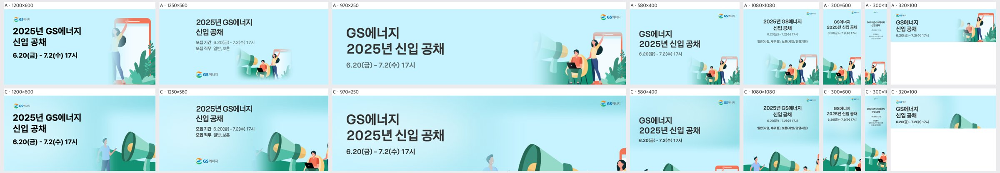
| 규격 | 점수 | 비중 | 크롭 | 배경 | 글자 | 메모 | AI 상자 | 그림 면적·주인공·채움·겹침 |
|---|---|---|---|---|---|---|---|---|
| 1200×600 | 3 | ok | subject_cut | ok | ok | 메가폰이 오른쪽 끝에서 잘리고 노트북 남자·여자·휴대폰이 모두 빠졌다. 그림을 약 70%로 줄이고 오른쪽 정렬해 메가폰부터 여자·휴대폰까지 인물 그룹 전체를 넣어야 한다. | shrink | 39% · 33% · 50% · 1.6% |
| 1250×560 | 2 | ok | awkward | ok | ok | 메가폰 반쪽과 노트북 남자 머리만 하단에 걸쳐 어색하다. 그림을 축소해 메가폰·남자·여자·휴대폰이 한 덩어리로 보이게 우하단에 배치해야 한다. | shrink | 43% · 36% · 48% · 3.4% |
| 970×250 | 2 | too_big | face_cut | ok | ok | 메가폰 윗부분이 잘리고 남자 얼굴은 하단에, 여자는 오른쪽 끝에 반만 걸려 있다. A처럼 그림을 띠 높이에 맞게 축소해 우측에 인물 그룹을 온전히 넣어야 한다. | shrink | 52% · 42% · 58% · 0% |
| 580×400 | 1 | too_small | awkward | flat | ok | 하단에 수풀과 메가폰 끝만 살짝 보여 지면 대부분이 빈 하늘색이다. 크롭 위치를 위로 올리고 그림을 키워 하단 1/3에 인물 그룹이 확실히 보이게 해야 한다. | shrink | 39% · 32% · 47% · 0% |
| 1080×1080 | 3 | ok | subject_cut | ok | ok | 하단 그림이 왼쪽 남자와 메가폰 쪽으로 치우쳐 여자·휴대폰이 오른쪽에서 잘린다. 그림을 가로 폭에 맞게 약간 줄여 인물 3명과 휴대폰이 모두 들어오게 해야 한다. | shrink | 47% · 44% · 64% · 0% |
| 300×600 | 3 | ok | subject_cut | ok | ok | 메가폰만 크게 보이고 인물은 가장자리에서 잘린다. 크롭 중심을 메가폰과 노트북 남자·여자 사이로 옮겨 인물이 최소 2명은 보이게 해야 한다. | shrink | 50% · 17% · 31% · 0% |
| 300×1050 | 3 | ok | subject_cut | ok | ok | 하단에 메가폰과 인물 일부만 보이고 그림 크기가 작다. 하단 영역을 넓혀 그림을 키우고 크롭 중심을 인물 쪽으로 옮겨야 한다. | free | 57% · 3% · 18% · 0% |
| 320×100 | 2 | too_small | awkward | ok | ok | 오른쪽 아래에 메가폰 끝만 삐죽 나와 무엇인지 알아볼 수 없다. A처럼 여자와 휴대폰 또는 메가폰 전체가 보이는 영역을 골라 높이에 맞게 넣어야 한다. | free | 53% · 22% · 39% · 0% |
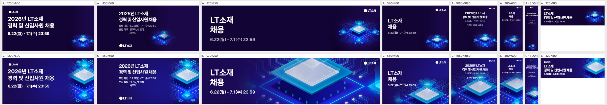
| 규격 | 점수 | 비중 | 크롭 | 배경 | 글자 | 메모 | AI 상자 | 그림 면적·주인공·채움·겹침 |
|---|---|---|---|---|---|---|---|---|
| 1200×600 | 4 | ok | subject_cut | ok | ok | 칩 오른쪽과 위쪽이 프레임 밖으로 잘리니 키비주얼을 약 10% 축소하고 왼쪽으로 옮겨 칩 상판 전체가 보이게 하라. | shrink | 31% · 10% · 31% · 0% |
| 1250×560 | 3 | ok | subject_cut | ok | ok | 칩이 오른쪽 끝에 붙어 절반가량 잘리니 키비주얼을 우측 여백 안으로 당겨 칩 중심이 프레임 가로 75~80% 지점에 오도록 재배치하라. | shrink | 32% · 9% · 27% · 0% |
| 970×250 | 2 | too_big | awkward | ok | ok | 칩이 과하게 확대돼 상하가 잘리고 상판 조각만 보이니 높이에 맞춰 칩 전체가 들어오도록 축소하고 우측 1/3 영역에 배치하라. | grow | 82% · 30% · 38% · 0% |
| 580×400 | 3 | ok | subject_cut | ok | ok | 칩 하단과 우측이 잘리고 날짜 문구와 회로선 간격이 좁으니 칩을 위로 약 15% 올리고 살짝 축소해 전체 실루엣을 확보하라. | shrink | 58% · 15% · 23% · 0% |
| 1080×1080 | 4 | ok | subject_cut | ok | ok | 칩 하단이 잘리니 키비주얼을 위로 약간 올리고, 하단 여백을 그라데이션으로 마감해 칩 전체가 안착하게 하라. | grow | 80% · 22% · 38% · 0% |
| 300×600 | 4 | ok | ok | ok | ok | 칩 좌우가 프레임에 닿아 답답하니 약 10% 축소해 칩 좌우에 숨 쉴 여백을 주라. | grow | 72% · 35% · 43% · 0% |
| 300×1050 | 3 | ok | ok | busy | low_contrast | 본문 글자가 너무 작고 뒤 회로선과 겹쳐 안 읽히니 텍스트 영역 뒤 회로를 어둡게 눌러 주고, 제목·날짜를 키워 행간을 정리하라. | shrink | 45% · 15% · 28% · 0% |
| 320×100 | 4 | ok | subject_cut | ok | ok | 칩이 '채용' 문구 끝에 거의 닿으니 칩을 우측으로 붙이고 조금 축소해 글자와 간격을 확보하라. | free | 37% · 24% · 45% · 0% |
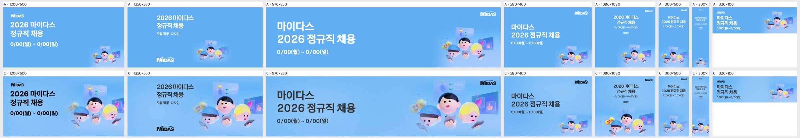
| 규격 | 점수 | 비중 | 크롭 | 배경 | 글자 | 메모 | AI 상자 | 그림 면적·주인공·채움·겹침 |
|---|---|---|---|---|---|---|---|---|
| 1200×600 | 4 | ok | subject_cut | ok | ok | 하단에서 손과 폰이 잘리고 오른쪽 하트 카드도 가장자리에 걸리니, 키비주얼을 약 8% 줄여 위로 올리고 왼쪽으로 붙여 손과 폰을 화면 안에 넣는다. | shrink | 49% · 21% · 37% · 0% |
| 1250×560 | 4 | ok | subject_cut | ok | ok | 아래쪽 손과 폰, 오른쪽 하트 카드가 잘리니, 키비주얼을 약간 축소해 하단 여백을 확보하고 MIDAS 로고와 높이 균형을 맞춘다. | ok | 56% · 24% · 33% · 0% |
| 970×250 | 4 | ok | subject_cut | ok | ok | 세 캐릭터의 몸과 폰이 하단에서 크게 잘리고 파란 모자 캐릭터가 바닥에 걸리니, 키비주얼을 10% 줄여 턱선 아래까지 보이도록 위치를 올린다. | shrink | 42% · 20% · 34% · 0% |
| 580×400 | 3 | too_small | ok | flat | ok | 키비주얼이 우하단 구석에 작게 박혀 A와 차이가 없으니, 높이의 55~60% 크기로 키워 오른쪽 절반을 채우고 텍스트 블록은 왼쪽 위로 모은다. | rule | 10% · 8% · 22% · 0% |
| 1080×1080 | 3 | ok | face_cut | flat | ok | 하단 캐릭터 얼굴이 바닥에서 잘리고 상단 텍스트가 너무 작아 가운데가 비니, 키비주얼을 위로 15% 올려 얼굴을 온전히 넣고 타이틀을 1.5배 키운다. | free | 51% · 18% · 29% · 0% |
| 300×600 | 3 | too_small | ok | flat | ok | 텍스트와 키비주얼 사이 중앙이 텅 비니, 키비주얼을 폭 가득(좌우 넘침 허용) 키워 화면 중하단을 채우고 타이틀 크기를 키운다. | rule | 0% · 19% · 31% · 0% |
| 300×1050 | 2 | too_small | subject_cut | flat | low_contrast | 타이틀이 판독 불가 수준으로 작고 세로 2/3가 빈 지면이니, 타이틀을 폭의 80%까지 키우고 키비주얼을 중앙부로 올려 크게 배치한다. | shrink | 34% · 4% · 13% · 0% |
| 320×100 | 4 | ok | ok | ok | ok | 키비주얼이 오른쪽 끝에 붙어 다소 작으니, 높이를 꽉 채우도록 10~15% 키우고 텍스트와 간격을 조금 띄운다. | rule | 17% · 13% · 29% · 0% |
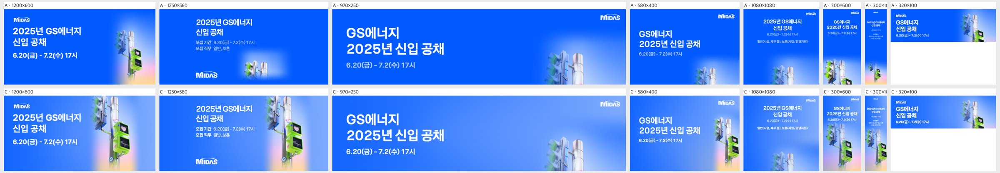
| 규격 | 점수 | 비중 | 크롭 | 배경 | 글자 | 메모 | AI 상자 | 그림 면적·주인공·채움·겹침 |
|---|---|---|---|---|---|---|---|---|
| 1200×600 | 4 | ok | ok | ok | ok | 신호등 헤드 윗부분이 캔버스 상단에 살짝 잘린다. 키비주얼을 10%쯤 아래로 내려 헤드 전체가 보이게 하고, 하단 핑크 그라데이션이 우측에만 몰린 부분은 좌측으로 부드럽게 이어 준다. | shrink | 36% · 27% · 44% · 5.8% |
| 1250×560 | 4 | ok | ok | ok | ok | 보행 신호기는 잘 보이지만 신호등 헤드가 상단에서 잘린다. 키비주얼을 약간 축소하거나 아래로 내리고, 우측 끝 여백을 조금 확보한다. | shrink | 31% · 25% · 37% · 0% |
| 970×250 | 2 | too_small | awkward | flat | ok | 우하단에 기둥과 신호등 윗머리 조각만 보이고 주인공인 녹색 보행 신호기가 빠져 있다. 보행 신호기 박스를 중심으로 크롭하고 높이를 꽉 채우도록 키워 우측 1/3에 배치한다. | rule | 6% · 19% · 34% · 0% |
| 580×400 | 3 | ok | subject_cut | ok | ok | 보행 신호기가 우측 끝에서 잘린다. 키비주얼을 왼쪽으로 15~20% 당기거나 살짝 축소해 신호기 박스 두 개가 온전히 들어오게 한다. | free | 22% · 17% · 32% · 0% |
| 1080×1080 | 2 | too_small | awkward | flat | ok | 하단에 신호등 꼭대기만 작게 걸쳐 있어 화면 하단 절반이 텅 비어 보인다. 텍스트 블록 아래 영역을 키비주얼로 채우고, 보행 신호기까지 보이도록 키워서 하단 중앙에 배치한다. | rule | 8% · 23% · 43% · 0% |
| 300×600 | 4 | ok | ok | ok | ok | 하단 신호기 구성이 좋다. 다만 키비주얼 위쪽 경계가 텍스트 블록에 너무 붙어 있으니 10px 정도 내려 텍스트와의 간격을 확보한다. | grow | 79% · 46% · 59% · 0% |
| 300×1050 | 3 | ok | ok | flat | low_contrast | 본문 글자가 극단적으로 작아 사실상 안 읽힌다. 헤드라인과 날짜를 2배 이상 키워 상단 빈 지면을 채우고, 직무 상세 문구는 이 규격에서 삭제한다. | grow | 70% · 56% · 71% · 0% |
| 320×100 | 3 | ok | awkward | ok | ok | 신호등 헤드만 보여 브랜드 소재인 녹색 보행 신호기가 드러나지 않는다. 보행 신호기 박스만 타이트하게 크롭해 우측에 넣는다. | rule | 18% · 38% · 54% · 0% |
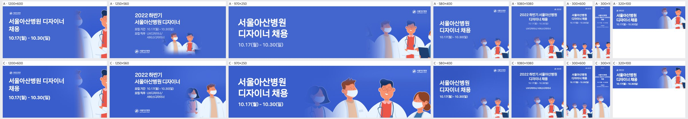
| 규격 | 점수 | 비중 | 크롭 | 배경 | 글자 | 메모 | AI 상자 | 그림 면적·주인공·채움·겹침 |
|---|---|---|---|---|---|---|---|---|
| 1200×600 | 2 | too_small | awkward | flat | ok | 오른쪽 끝에 의사 한 명의 반쪽만 걸려 있다. 키비주얼을 1.5배쯤 키우고 왼쪽으로 옮겨 오른쪽 40% 영역에 의사 2~3명 얼굴이 온전히 들어오게 하고, 왼쪽의 빈 파랑을 줄여야 한다. | rule | 14% · 30% · 44% · 0% |
| 1250×560 | 4 | ok | ok | ok | ok | A보다 인물이 커져 좋아졌다. 다만 왼쪽 여성 의사가 페이드에 묻혀 흐릿하니 페이드 시작점을 왼쪽으로 50px 정도 옮기고, 오른쪽 인물이 끝에서 잘리지 않게 여백을 확보한다. | shrink | 26% · 24% · 36% · 0% |
| 970×250 | 4 | ok | ok | ok | ok | 네 명이 크게 들어와 바로 쓸 만하다. 맨 왼쪽 여성 의사 얼굴이 '채용' 글자 오른쪽으로 바짝 붙으니 인물 그룹을 오른쪽으로 30px 정도 밀어 텍스트와 숨 쉴 간격을 준다. | free | 53% · 48% · 63% · 0% |
| 580×400 | 3 | too_small | subject_cut | flat | ok | 인물이 오른쪽 아래 구석에 작게 몰려 있고 상체가 하단에서 잘린다. 인물을 1.3배 키워 얼굴이 지면 세로 중앙 근처까지 올라오게 하고, 텍스트 아래 빈 공간을 채워야 한다. | rule | 6% · 20% · 35% · 0% |
| 1080×1080 | 2 | too_small | subject_cut | flat | ok | 정사각 지면 하단 1/4에 작은 인물만 있고 중간이 텅 빈 파랑이다. 키비주얼을 지면 폭에 맞게 확대해 하단 절반을 채우고, 텍스트 블록을 상단 1/3에 더 크게 배치한다. | rule | 10% · 33% · 50% · 0% |
| 300×600 | 3 | too_small | subject_cut | flat | ok | 인물이 하단에 작게 잘려 있고 가운데가 비어 있다. 인물 2명만 골라 지면 폭 가득 확대해 하단 40%를 채우고, 제목 글자도 키운다. | rule | 16% · 31% · 45% · 0% |
| 300×1050 | 2 | too_small | subject_cut | flat | low_contrast | 세로로 긴 지면에서 글자가 너무 작아 안 읽히고, 인물은 하단 구석에 조금만 걸린다. 제목을 최소 22px 이상으로 키우고, 인물 1~2명을 폭 가득 확대해 하단 1/3을 채워야 한다. | grow | 48% · 39% · 53% · 0% |
| 320×100 | 3 | ok | face_cut | ok | ok | 오른쪽 인물 머리가 상단에서 잘린다. 키비주얼을 10~15% 축소하거나 아래로 내려 얼굴 두 개가 온전히 들어오게 하고, 날짜 글자는 가독 최소 크기로 키운다. | rule | 18% · 38% · 58% · 0% |